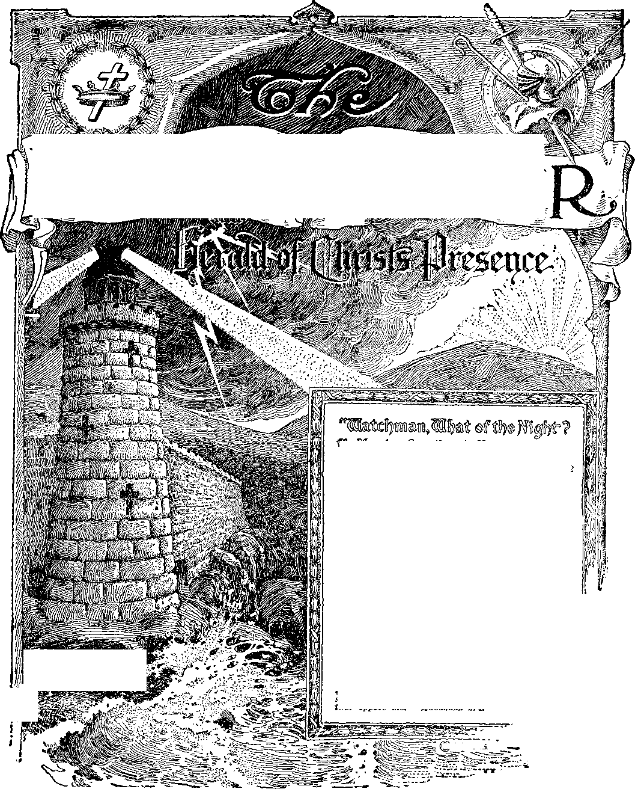

-Av
©WT.B.6T.S
No. 12
191
191
179
179
185
187
188
WJ¥©miinig^iM®tllj.aaidaHig&ta5sdF-feai^
Vol. XLIX
Semi-Monthly
Anno Mundi 6056—June 15, 1028
CONTENTS
1 7iROCKOFAGES
I ■ Other foun'dation can. 'no man lay-'/
-. a;ransom fou
Bran Mf.kcif.s of David ..................
With David ....................................
Beloved One .............................
Zeal of Christ ...............................’
Mercies .........................................
When Made .....................................
Others Taken In ............................
The Invitation ...............................
Tub Day of Jehovah .....................
Questions on Witnessing ..............
Interesting Lbttbtis ....................
Some More Suggestions________________
“Never Heard Anything Like It'1 A Report from Poland .............
Intebnation.il Convention ............
Bethel Special ................................
Other Special Trains ......................
lr0 181
181 1R1 183
"1 will stand upon mp watch and will set my foot upon the Tower, and will watch to see. what Ue «,:l say unto me, and what answer I shall make to them that oppose me."—HMaMculc 2:i.
Upon the earth distress of nations, with perplexity; the sea and the .raves [the restless, discontented] roaring; men’s hearts failing theta for fear, and for looking after those things which are coming on the earth: for the powers of heaven shall be shaken. . . . When these things begin to come to pass, then know that the Kingdom of God is at hand. Look up, and lift up your heads; for your redemption draweth nigh.—Luke 21: 25-31; Matthew 24 : 33; Mark 13 : 29.
THIS JOURNAL AND ITS SACRED MISSION
THIS journal Is published by the Watch Tower Bible and Tbact Society for the purpose of aiding the people to understand the divine plan. It provides systematic Bible study in which all its readers may regularly engage. It gives announcement of the visits made to Bible classes by traveling speakers, announces conventions, and gives reports thereof. It announces radio programs and publishes suitable Bible instruction for broadcasting.
It adheres strictly to the Bible as God’s revealed Word of Truth. It stands firmly upon the great ransom sacrifice as the fundamental doctrine by which all doctrines are measured.' It is free from parties, sects and creeds of men. It does not assume a dogmatic attitude, but confidently invites a careful examination of its utterances in the light of the infallible Word of God. It does not indulge in controversies, and its columns are not open to personalities.
TO US THE SCRIPTURES CLEARLY TEACH
THAT JEHOVAH is the only true God, the Maker of heaven and earth, and is from everlasting to everlasting; that the Logos was the beginning of his creation; that the Logos became a man; that he is now the Lord Jesus Christ in glory, clothed with all power in heaven and earth.
THAT GOD created the earth for man, created perfect man for the earth and placed him upon it; that man wilfully disobeyed God’s law and was sentenced to death; that by reason of Adam’s wrongful act all men are born sinners and without the right to life.
THAT JESUS was made a human being in order that he might become the Redeemer of man; that he gave his life a sacrifice for man and thereby produced the ransom price; that Jesus the divine arose from the dead, ascended into heaven, and presented the value of his human sacrifice as the redemptive price for man.
THAT for many centuries God, through Christ, has been selecting from amongst men the members of his church, Which constitutes the body of Christ; that the mission of the ehurch is to follow in the footsteps of her Lord Christ Jesus, grow in his likeness, give testimony to the name and plan of Jehovah God, and ultimately be glorified with Christ Jesus in his heavenly kingdom; that Christ, Head and body, constitutes the “seed of Abraham” through which all the families of the earth shall be blessed.
THAT THE WORLD HAS ENDED; that the Lord Jesus has returned and is now present; that Jehovah has placed Christ Jesus upon his throne and now commands all nations and peoples to hear and obey him.
THAT THE HOPE of the peoples of earth is restoration to human perfection during the reign of Christ; that the reign of Christ will afford opportunity to every man to have a fair trial for life and those who obey will live on earth for ever in a state of happiness.
PUBLISHED BY
WATCH TOWER BIBLE &. TRACT SOCIETY
117 ADAMS STREET - - BROOKLYN, N. Y. U.S.A.
OFFICERS
J. P. Rutherford President
W. E. Van Ambvbch Secy. & Treat.
EDITORIAL COMMITTEE J. F. Rutherford
W. E. Van Amburgh J. Hemery B. H. Barber E. J. Coward Foreign Offices : British: 34 Craven Terrace, London, W. 2, England; Canadian: 40 Irwin Avenue, Toronto, Ontario; Australasian: 495 Collins St., Melbourne, Australia; South African: 6 Lelie St., Cape Town, South Africa. Please address the Society in every case.
Yearly Subscription Price : United States, $1.00; Canada and Miscellaneous Foreign, $1.50; Great Britain, Australasia and Sol th Africa, 7s. American remittances should be made by Express or Postal Money Orders, or by Bank Draft. Canadian, British, South African and Australasian remittances should be made to branch offices only. Remittances from scattered foreign territory may be made to the Brooklyn office, but by International Postal Money Orders only.
(Foreign translations of this journal appear in several languages.) Terms to the Lord’s Poor : All Bible Students who, by reason of old age or other infirmity or adversity, are unable to pay for this journal, will be supplied free if they send a postal card each May stating their case and requesting such provision. We are not only willing, but anxious, that all such be on our list continually and in touch with the Berean studies.
Notice to Subscribers: We do not, as a rule, send an acknowledgment of a renewal or a new subscription. A renewal blank (carrying a notice of expiration) will be sent with the journal one month before the subscription expires. Change of address, when requested, may be expected to appear on address label within one month.
Entered as Second Class Mail Matter at Brooklyn, N. Y. Postoffice. Act of March 3, 1879.
(Continued from page 101)
SERVICE DAYS
Two days during the convention will be assigned to field service. This will afford an opportunity for a thorough witness to Detroit and vicinity. Every one driving to the convention by automobile should promptly report to the service director for assignment, and for the use of the car on service day. Of course every one attending the convention and who has the spirit of the Lord will desire to have some part in the field service. Each will have in mind the words of God’s prophet; “In his temple doth every one speak of his glory.”
There will be much to do at this convention. God’s anointed more fully appreciate now than ever before the privilege and necessity for magnifying the name of Jehovah. They will attend this convention with an enthusiastic determination to represent the great God and his new government in the best possible way according to their several ability.
In due time The Watch Tower will announce the address of the Convention Committee at Detroit. Do not write any letters of inquiry until this announcement is made; and then let all your correspondence be addressed to that committee. There will be a proper and efficient organization to look after the general welfare of those who attend.
All the regional service directors will be routed to the convention. It is hoped that all the colporteurs may attend. It is expected that every ecclesia in America will be represented, and many from foreign lands.
All the foreign-speaking brethren will have their convention in separate meeting halls at Detroit at the same time. At stated periods there will be a general assembly of the English-speaking and all other brethren at the Coliseum. It will be a time of happy and enthusiastic communication and consultation among all the brethren, regardless of race, age, present or previous condition. All the anointed are one in Christ and all of these are appreciating the great privilege of now participating in the proclamation of God’s righteous government.
Any and every one who loves the Lord and loves righteousness will be welcome at the convention. Bring your friends and members of your family and neighbors with jou to the convention. We are now “in that day”. In obedience to God’s command let all now delight to sing forth the praises of Jehovah and declare his doings unto the people. The convention will enable many to be strengthened for further activities to the Lord’s glory. It will be a time of great refreshment and blessing to those who attend with a sincere desire to honor Jehovah’s name.
Vol. XLIX
June 15, 1928
No. 12
"Incline your ear, and come unto me: hear, and your soul shall live; and 1 will make an everlasting covenant v'ith you, even the sure mercies of David.”—Isaiah 55:3.
JEHOVAH makes an everlasting covenant with some one, as this text shows. Who is it that is in the covenant on the other side? Since Jehocah made more than one covenant it might be well to determine which of these covenants, if any of them, is referred to in the above statement by the prophet.
2 The word “everlasting” used in the above text does ngt necessarily mean an endless period of time. The Hebrew word from which the English word “everlasting” is translated has the significance of “concealed duration”. That means a duration that is not known. Since the period is not known it may be for a stated time so far as God is concerned or it may be everlasting.
3 God made a covenant with Noah immediately following the flood, in which the sacredness of human life is emphasized. The Scriptures in speaking of that covenant say: “The bow shall be in the cloud; . . . that I may remember the everlasting covenant between God and every living creature of all flesh that is upon the earth.” (Genesis 9:16) It seems clear that the prophet of God referred to that covenant when he said: “They have transgressed the laws, . . . broken -the everlasting covenant.” (Isaiah 24:5) That covenant with Noah stated God’s law relative to the sanctity of human life. The law of God does not change. Therefore that covenant with Noah is everlasting.
4 Jehovah made a covenant with Abraham in which it is stated: “And I will establish my covenant between me and thee, and thy seed after thee, in their generations, for an everlasting covenant, to be a God unto thee, and to thy seed after thee.” (Genesis 17:7) The time will come when the terms of that covenant will be fulfilled. But the duration thereof was concealed at the time made.
8 The law covenant made with Israel in Egypt and confirmed at Mount Sinai is spoken of as an everlasting covenant. (Exodus 13:16; Leviticus 24: 8) The terminating point of the law covenant was concealed and therefore not known to the Jews. It would have lasted for ever had the Jews performed their part perfectly.
• The new covenant made at the death of Jesus, which will be confirmed and inaugurated in heaven, is called
179
in the Scriptures an everlasting covenant. “And I will make an everlasting covenant with them, that I will not turn away from them to do them good; but I will put my fear in their hearts, that they shall not depart from me.”—Jeremiah 32: 40.
7 In view of the Scriptural proof above cited showing that various covenants were mentioned as everlasting covenants it is hardly Scriptural to say that any one covenant is to be designated as the everlasting covenant to the exclusion of all other covenants. All covenants Jehovah makes are everlasting in this, that he is faithful and true in carrying into operation that covenant or covenants on his part and that without any change.
WITH DAVID
8 Jehovah said of David : “I have found David the son of Jesse, a man after mine own heart, which shall fulfil all my will.” (Acts 13: 22) He also said of him: “I have made a covenant with my chosen, I have sworn unto David my servant.” (Psalm 89:3) Furthermore it is written: “Howbeit the Lord would not destroy the house of David, because of the covenant that he had made with David, and as he promised to give a light [lamp or candle) to him and to his sons for ever.” (2 Chronicles 21:7) When David was about to die he gave utterance to these last words: “Now these are the last words of David. . . . Although my house be not so with God ; yet he hath made with me an everlasting covenant, ordered in all things, and sure: for this is all my salvation, and all my desire, although he make it not to grow.” (2 Samuel 23: 1, 5) Furthermore the Lord shows through his Word that the covenant with David was not to be broken. —Jeremiah 3? ; 20, 21.
9 The terms of the covenant are also made known in the Word of the Lord. God directed his prophet Nathan to speak to David these words: “And when thy days be fulfilled, and thou shalt sleep with thy fathers, I will set up thy seed after thee, which shall proceed out of thy bowels, and I will establish his kingdom. He shall build an house for my name, and I will stablish the throne of his kingdom for ever. And thine house and thy kingdom
shall be established for ever before thee: thy throne shall be established for ever.”—2 Samuel 7: 12,13,1G.
10 Jehovah made promise to David and gave his oath that if his children would keep his covenant that his children would sit upon his throne for ever. (Psalm 132:11,12) It is stated that the agreement was made even with a covenant of salt. (2 Chronicles 13:5) Salt is a symbol that the covenant will be diligently preserved and therefore should stand for ever.—Leviticus 2: 13; Numbers 18 :19.
BELOVED ONE
11 The name David means ‘'beloved one”. It is manifest that the imperfect man David foreshadowed Jesus the beloved Son of God. Ihe covenant which God made with David the king of Israel is really made and applies between God and his beloved Son Christ Jesus. It was carried out in type with David, who foreshadowed the completion thereof with Cliri.T Jesus upon whom it is fulfilled. When recognizing that the covenant applies to Christ, it at once becomes of keenest interest to all who are in Christ by reason of justification, begetting and anointing by Jehovah. The everlasting covenant, even the sure mercies of David, is of great interest and importance to the church at this time. Believing this to be true, the effort is made here at some length to show its proper application.
12 The diadem and crown were taken away from the natural descendants of David at the overthrow of Zede-kiah, and God promised to give it to him “whose right it is”. (Ezekiel 21: 26, 27) The psalmist then in prophetic phrase sang concerning Jesus the anointed of the Lord and said: “Thou settest a crown of pure gold on his head.” (Psalm 21:3) That the prophecy of Isaiah 55: 3 applies to Jesus Christ is made certain by the words of the Apostle Paul: “And as concerning that he raised him up from the dead, now no more to return to corruption, he said on this wise, I will give you the sure mercies of David.”—Acts 13 : 31.
13 In this connection reference is had to the words of the prophet: “He asked life of thee, and thou gavest it him, even length of days for ever and ever.” (Psalm 21:4) Jesus asked Jehovah for life. When he was about to die he prayed that he might be glorified with the glory that he had before the world was. He asked not for honor above that. But God granted his request and even more and raised him up out of death, and gave him life for evermore. This is a proof that Jesus was resurrected to the divine nature. The psalmist had written of the same matter when he said: “Thou wilt prolong the king’s life [by breaking the bonds of death]; and his years as many generations. He shall abide before God for ever.”—Psalm 61: 6, 7.
14 It seems certain therefore that the covenant embraced the promise on God’s part to raise Jesus up out of death. Jesus understood that he was to be raised from the dead when he said: “And they shall kill him, and the third day he shall be raised again.”—Matt. 17:23.
15 Jesus was the root and offspring of David. (Revelation 5:5; Isaiah 11:10) The angel Gabriel said to Mary: “He shall be great, and shall be called the Son of the Highest: and the Lord God shall give unto him the throne of his father David: and he shall reign over the house of Jacob for ever; and of his kingdom there shall be no end.”—Luke 1: 32, 33.
1G This is corroborated by Jesus’ conversation with the Pharisees. (Matthew 22:42-45) In further proof that Jesus was the seed of David, and that the covenant was really made with him the prophet says: “I -will make him my firstborn, higher than the kings of earth. My mercy will I keep for him for evermore, and my covenant shall stand fast with him. His seed also will I make to endure for ever, and his throne as the days of heaven.”—Psalm 89 : 27-29.
17 Without doubt the prophet sang of Jesus when he uttered the words: “Thou art fairer than the children of men; grace is poured into thy lips: therefore God hath blessed thee for ever. Thy throne, 0 God, is for ever and ever: the sceptre of thy kingdom is a right sceptre.” (Psalm 45:2,6) His sceptre was a right sceptre because ordained to him by the prophecy of Jacob. (Genesis 49 : 10) That his name is to be remembered for ever is certain: “I will make thy name to be remembered in all generations; therefore shall the people praise thee for ever and ever.”—Psalm 45: 17.
18 The Apostle Paul applies these texts to Jesus and therefore we know we have the right application. “But unto the Son he saith, Thy throne, 0 God, is for ever and ever: a sceptre of righteousness is the sceptre of thy kingdom: Thou has loved righteousness, and hated iniquity; therefore God, even thy God, hath anointed thee with the oil of gladness above thy fellows.” —Hebrews 1: 8, 9.
19 The Prophet Isaiah was speaking of Jesus when he wrote concerning the Prince of Peace that the government should be upon his shoulder.—Isaiah 9: 6, 7.
20 The Scriptures therefore prove beyond a question that the everlasting covenant, even the sure mercies of David, is in fact a covenant of Jehovah with Christ the seed of David and that the covenant is for life divine, for a throne everlasting, for a crown, and for a kingdom.
ZEAL OF CHRIST
21 It is written concerning David the king of Israel that he sat in his house made of cedar, but at that time the ark of the Lord was in a tent. David had brought the ark up from the house of Obed-edom and placed it in a tent on Mount Zion. As David sat in his own house he considered how appropriate it would be for him to build a house for the Lord wherein the ark could rest. God knew David’s thoughts and his zeal to build the house and therefore he sent Nathan the prophet, who spoke in the name of the Lord, saying to David: “Thus saith the Lord, Shalt tlibu build me an house for me to dwell in ?”•—2 Samuel 7: 5.
22 It therefore appears that David’s care for the Lord’s interests committed to his hands and his zeal for the Lord’s house was the basis for the making of the covenant. In this David foreshadowed Jesus who was zealous in the performance of his duty, caring for the interests which God had committed into his hands. Concerning him the prophet wrote: ‘‘The zeal of thine house hath eaten me up.” (Psalm 69:9) Jesus displayed a zeal for his Father's house that led him to the making of the covenant by sacrifice and by and through which covenant he was consumed in behalf of the Lord Je-hoxah’s house. Because of that zeal and faithfulness God made a covenant with him for a kingdom and for immortality.
23 David was concerned about building a house for the Lord, so the Lord took an interest in David’s house and of his own volition proposed and stated the terms of the everlasting covenant. It is written: “Also the Lord telleth thee, that he wdl make thee an house.” (2 Samuel 7 : 11) This beautiful text shows how the Lord never forgets devotion to him. Jesus was deeply concerned with the interests which God had committed into his hands, and therefore God budded him a house not made with hands and overdhat house he made Jesus the Head. —Hebrews 3 : 6.
MERCIES
24 Is there any reason to believe that the “everlasting covenant” mentioned in Isaiah 55: 3 is the new covenant by and through which Israel and all mankind will have restoration blessings? There is no reason to believe that the prophet of God there made any reference to the new covenant.
25 Is it not true that The Christ, who was foreshadowed by King David, will extend mercies to the people under the terms of the new covenant, and does not that show that the everlasting covenant mentioned by the Prophet Isaiah is the new covenant? It is true that Christ during his reign will show mercy to the people, but that does not prove that this covenant refers to such mercies bestowed upon the people by Christ.
2G Surely Jesus was not shown mercy but met completely all requirements. But the members of his body do receive mercy. Some light is thrown on this text by other translations. The Septuagint renders it, “the gracious promises to David which are faithful.” Rotherham renders that portion of the text, “the lovmgkind-ness to David well-assured.” The thought of mercy does not seem to be that of undeserved forgiveness shown toward the imperfect creature or erring one; but rather, the thought is that of extraordinary goodness which Jehovah delights to show toward his beloved. Such goodness and loving-kindness is like mercy in that it is not exacted by demands of justice. All doubt as to the meaning of the covenant is removed by the inspired witness who testified: “As it is written also in the second psalm, Thou art my Son : this day I have begotten thee. And because he raised him from the dead, no more to return to corruption, he has spoken thus, I will give you the sure mercies of David.”—Acts 13: 33, 34, Dio-glolt.
27 The Scriptures often refer to the body members as Christ because they do constitute a part of Christ. Every one who has put on Christ by being adopted into Christ through spirit begetting and anointing is a part of him. (Galatians 3 : 27, 29) It follows then that “the sure mercies of David” means the extraordinary goodness which Jehovah bestows upon those whom he justifies, begets and anoints with his spirit.
WHEN MADE
28 The Scriptures show that the terms of the everlasting covenant were stated by Jehovah through the agency of Nathan his prophet, and stated unto David after David had displayed zeal for the Lord’s house. It was then that God said to David: “And thine house and thy kingdom shall be established for ever before thee: thy throne shall be established for ever.” (2 Samuel 7: 16) When the anointed of God, the sweet singer of Israel, was in his last hours he prophesied and said: “The spirit of the Lord spake by me, and his word was in my tongue. The God of Israel said, the Rock of Israel spake to me, He that ruleth over men must be just, ruling in the fear of God: and he shall be as the light of the morning, when the sun riseth, even a morning without clouds; as the tender grass springing out of the earth by clear shining after rain. Although my house be not so with God; yet he hath made with me an everlasting covenant.”—2 Samuel 23 : 2-5.
29 Since the covenant undoubtedly applies to Jesus, when was it made applicable to him ? Its application to Jesus could not be made until Jesus became the seed of David. It was the time of the consecration of Jesus at the Jordan when he was begotten and anointed that he became the seed of David. David, the anointed king and beloved of God, foreshadowed Jesus the anointed and beloved Son of God who is now king. When Jesus was anointed at the Jordan and there became “the seed of David” it was there that the everlasting covenant applied to him. After Jesus was raised from the dead the covenant was confirmed unto him. This is shown by tha inspired words of Paul: “God hath fulfilled the same unto us their children, in that he hath raised up Jesus again; as it is also written in the second psalm, Thou art my Son, this day have I begotten thee. And as concerning that he raised him up from the dead, now no more to return to corruption, he said on this wise, I will give you the sure mercies of David.” (Acts 13: 33, 34) “But unto the Son he saith, Thy throne, 0 God, is for ever and ever: a sceptre of righteousness is the sceptre of thy kingdom.”—Hebrews 1: 8.
OTHERS TAKEN IN
30 It was the will of Jehovah that Jesus should have associated with him 144,000 who should constitute his bride and his body members and his joint-heirs. It was due to God’s gracious goodness and the unselfishness of Jesus that the arrangement was made that these should be taken into the covenant. It was at the time of the institution of the memorial of his death that Jesus told his faithful disciples that they would be taken into the everlasting covenant. Before telling them, however, it was his will to teach them a lesson of meekness and humility. The disciples were contending amongst themselves which should be the greatest. Jesus told them that the kings of this world exercised authority over the people and claimed to be their benefactors. Otherwise stated, the rulers of this world lorded it over others. Then he said to his disciples: “But you must not be so; but let the greatest among you become as the least, and the governor as he who serves. For who is greater, he who reclines, or he who serves ? Is not he who reclines ? But I am among you as he who serves.”—Luke 22: 26, 27, Diaglott.
31 God by his spirit had revealed the same thing to David. David said: “The God of Israel said, the Rock of Israel spake to me, He that ruleth over men must be just, ruling in the fear of God.” (2 Samuel 23 : 3) Few have been the men if any on earth who have ruled amongst their fellow creatures in harmony with this. Almost every man who is given any authority thinks he must be the boss or tyrant and lord it over his fellow creatures. Jesus was laying down the ride to his disciples that those who should reign with him must do differently from the world. He was there among them the greatest of all and was serving. He was giving them the proper example. He knew that they had the right heart condition but must learn. That lesson was for the benefit of all who should become his followers. Then Jesus lovingly said to them: “And you are they who have continued with me in my trials. And I covenant for you, even as my Father has covenanted for me, a kingdom, that you may eat and drink at my table in my kingdom, and sit on thrones, judging the twelve tribes of Israel.”—Luke 22: 28-30, Diaglott.
32 Jesus’ words could mean only this: 'Eleven of you have been faithful to me. You have stood by me in my trials; and now I am about to leave you. My Father has made a covenant with me for a kingdom and now I covenant with you that you shall be taken into the covenant and share the kingdom with me.’
33 There was nothing in the life experiences of David to foreshadow the sprinkling of blood in connection with the covenant. Yet it was when David was about to finish his course and life that God put his spirit upon David and impressed him with the importance of the everlasting covenant. It was at the Jordan when the covenant began to apply to Jesus. At that time Jesus made a consecration which meant his death. He made a covenant of sacrifice. It was after his death and resurrection that the covenant was confirmed unto him. The members of his body can be brought into the covenant only by and through Jesus’ blood. In bringing them into the covenant something more is required than merely the value of the ransom sacrifice. If merely the shedding of Jesus’ blood brought one into that everlasting covenant then all receiving the benefit of the ransom must ultimately be brought into it. But this is not all that is required.
34 When Jesus said to his disciples: “Ye are they which have continued with me in my trials,” he showed them that they had suffered reproaches with him and that they must continue to suffer reproaches with him as a condition precedent to entering into and abiding in the covenant. They must die with him in order to live with him on the divine plane, and they must suffer with him in order to reign with him as king. This is proven by his words to his disciples: “Then Jesus said unto them, Verily, verily, I say unto you, Except ye eat the flesh of the Son of man, and drink his blood, ye have no life in you. Whoso eateth my flesh, and drinketh my blood, hath eternal life; and I will raise him up at the last day. He that eateth my flesh, and drinketh my blood, dwell-eth in me, and I in him.”—John 6: 53, 54, 56.
35 That they must suffer reproaches with him is proven by his words: “The servant is not greater than his lord. If they have persecuted me, they will also persecute you. ’ (John 15:20) And again, that they would be reproached by the Devil’s organization is shown by his words: “These things I have spoken unto you, that in me ye might have peace. In the world ye shall have tribulation: but be of good cheer; I have overcome the world.” —John 16 : 33.
36 Only those who suffer with Jesus and who die with him can be brought into the everlasting covenant. This is proven by the words of Paul: “It is a faithful saying: for if we be dead with him, we shall also live with him.” (2 Timothy 2:11) In order to live with Jesus on the divine plane one must die with him the sacrificial death. Then the Apostle Paul shows that suffering is for a different reason. In another place he stated that Jesus learned obedience by the things he suffered. In 2 Timothy 2:12 he says: “If we suffer, we shall also reign with him: if we deny him, he also will deny us.”
37 The reproaches that reproached Jehovah God fell upon Jesus. These reproaches came from the Devil and his organization. The reproaches that reproached God and Jesus fall upon the body members and proceed from the same source. (Romans 15:3) This proves therefore beyond any question of a doubt that only those will reign with Christ Jesus who willingly and joyfully put themselves on the side of the Lord and thereby make themselves the target of the Devil and who faithfully represent the Lord.
38 To receive the truth merely from a selfish standpoint never could take one into the covenant of the sure mercies of David. The extraordinary goodness of God is conferred upon those who delight to bear the suffering and reproaches that are left behind for the benefit of the body. Let every one therefore who has made a covenant to do God’s will remember this, that those who have any part in the everlasting covenant and the sure mercies of David must die the sacrificial death even as Jesus died in order that they might live with him on the divine plane. They must also suffer the reproaches that reproached him for righteousness’ sake as a condition precedent to having any part in his kingdom.
THE INVITATION
39 Returning now to the consideration of Isaiah’s prophecy: It is manifest from the proper setting of the prophecy that the words contained in Isaiah 55:1-3 apply during that period of time when the gospel is preached as an invitation to men to hear and believe and follow Christ Jesus. God through his prophet then marks out the course that must be taken by those who would have a part in the everlasting covenant of David and be the recipients of God’s mercies. The prophecy begins with the exclamation inviting the attention of those who might have a hearing ear. The prophet takes his stand as at Pentecost and his words down through the period of sacrifice ring out: “Ho, every one that thirsteth, come ye to the waters.” Jesus commanded that the gospel should be preached to all nations, which means to both Jew and Gentile. (Matthew 28: 20) This is not a call, as many have erroneously construed it, to convert all the individuals of the nations of earth; but it is a call for the selection of those who shall be brought into the everlasting covenant.
40 On the great day of the feast Jesus stood and cried, saying: “If any man thirst, let him come unto me, and drink. He that believeth on me, as the scripture hath said, out of his belly shall flow rivers of living water.” (John 7: 37,38) That these words of invitation began to have an application at Pentecost is clearly shown by verse thirty-eight of the context. That this invitation was to be extended to those who would believe on the Lord Jesus Christ and follow him is shown by the further words of Jesus: “'But whosoever drinketh of the water that I shall give him shall never thirst; but the water that I shall give him shall be in him a well of water springing up into everlasting life.” (John 4: 14) Now these scriptures show that the application is to those that thirst, who are seeking after God if haply they might find him, whom the Lord addresses and these have a sincere and honest desire to come into harmonv with God. ‘
41 The prophet continues: “Come ye, buy and eat; yea, come, buy wine and milk without money, and without price.” (Isaiah 55: 1) How could one buy without money and without price? Evidently this refers to the fact that on the basis of man’s justification by faith in the shed blood of Christ Jesus Jehovah accepts such a one and then by begetting ushers him into the wealth of the divine house of sons. The price of partaking of the Lord’s divine good things is the sacrifice of all the justified one has. But this justification came to him without any expense on his part. It is charged to the account of Jesus. It is therefore without money and without price from one’s natural self. The one who is thus justified and accepted by the Lord, and who thus buys without money and without price, is invited to eat, to buy wine and milk, and partake thereof. Manifestly the wine and milk refer to something joy-inspiring and that which brings riches. We therefore conclude that wine and milk refer to the precious promises that are given to the spirit-begotten ones and the joys of serving the Lord and which is the fruit of the true vine. —John 15:8.
42 The second verse of the prophecy reads: “Wherefore do ye spend money for that which is not bread ? and your labour for that which satisfieth not ? Hearken diligently unto me, and eat ye that which is good, and let your soul delight itself in fatness.” (Isaiah 55: 2) Men have been invited to follow various opinions leading to life. The adversary through his agencies has placed before the people many alluring things. Many who have sought the way of life have been deceived by the subtlety of the evil one. Therefore the prophet asks: “'Wherefore do ye spend money for that which is not bread?” It was Jesus who said: “I am the bread of life.” No one can get life by partaking of any other. The invitation then is to the one who seeks the Lord, to hearken diligently and to eat the bread of life and delight in the fatness that shall result therefrom.
43 In harmony with this the psalmist, as God’s mouthpiece, said: “Hearken, 0 daughter, and consider, and incline thine ear; forget also thine own people, and thy father’s house; so shall the King greatly desire thy beauty; for he is thy Lord; and worship thou him.” (Psalm 45 :10,11) It is the ones who partake of Christ, giving themselves wholly to God, trusting in the merit of Christ, that have the opportunity for life on the divine plane. Jesus said: “Verily, verily, I say unto you, He that heareth my word, and believeth on him that sent me, hath everlasting life, and shall not come into condemnation ; but is, passed from death unto li fe.”—John 5: 24.
44 This has really been the gospel that has been preached by the faithful witnesses of the Lord during the Christian era. The message has pointed out Christ Jesus and him crucified. It has afforded the opportunity for those who had an earnest desire to know and do the Lord’s will to turn away from the world and seek the Lord and follow in Jesus’ footsteps. As a logical sequence of taking this course God through his prophet says: “Incline your ear, and come unto me: hear, and your soul shall live; and I will make an everlasting covenant with you, even the sure mercies of David.” (Isaiah 55:3) The sure mercies of David, or the extraordinary goodness of Jehovah, is then shown to all who make a full consecration to do his will. Being begotten and anointed they are taken into the covenant which guarantees to them if they are faithful that they shall be made partakers of the divine nature, be made like unto the Lord Jesus Christ, be joint-heirs with him in his kingdom, sit with him in his throne, and for ever be recipients of God’s choicest blessings.
*5 Verse four of the prophecy (Isaiah 55) shows why the covenant is made and what is God's purpose in permitting 144,000 to be called out from amongst men and taken into that covenant. The consideration of that is reserved until another issue of The Walch Tower.
40 Verse five (Isaiah 55) reads: “Behold, thou shalt call a nation that thou knowest not; and nations that knew not thee shall run unto thee, because of the Lord thy God, and for the Holy One of Israel; for he hath glorified thee.” What is meant by the words: “Thou shalt call a nation thou knowest not” ? The Apostle Peter explains that. The gospel went first to the Jews. They had the first opportunity of being taken into the covenant and of receiving the sure mercies of David. Only a few accepted. Thereafter the main number was taken from the Gentiles. Peter, addressing those who were called to the high calling, says: “But you are a chosen race, a royal priesthood, a holy nation, a people for a purpose; that you may declare the perfections of him who called you from darkness into his wonderful light; who once were not a people, but now are God’s people; who had not obtained mercy, but now have obtained mercy.” —1 Peter 2: 9,10, Dlaglott.
47 The nations of earth have not known Zion nor what Zion signifies. When the nations and peoples come to know that Zion is God’s organization and that their blessings come from Zion, of which Christ is the Head, then as the Prophet Isaiah says: “Nations that knew not thee shall run unto thee because of the Lord thy God.” ‘They shall come unto Zion with songs of joy upon their lips’; they will be seeking the way to come into harmony with God and learn that it comes from Christ the Head of Zion. The people will learn that God has glorified those whom he has taken into the covenant and that this is his instrument to bear blessings to the people. This scripture shows clearly that the prophecy, opening with the exclamation, “Ho, every one that thirsleth, Come,” is not addressed to “whosoever will”, and is not applicable to the millennial age, but is addressed to those who have an ear to hear, to those who have the faith of Abraham during the time of sacrifice which is the acceptable time of the Lord.
4S The sure mercies of David are therefore seen from the Scriptures to be the exceeding goodness and loving-kindness of God to his anointed ones, which is well assured to all who are faithful. This covenant of the sure mercies of David lays upon those who are brought into it the greatest responsibility and the greatest privilege that has ever been conferred upon human creatures. It behooves every anointed one now to inform himself of that privilege and responsibility and to give all diligence to show full obedience unto the Lord.
In the next issue of The Watch Tower we shall consider what is now the responsibility resting upon the anointed of God now on earih.
QUESTIONS FOR BEREAN STUDY
In this text, who is the speaker? What is meant by an “everlasting covenant”? V 1,2.
Show the meaning of the term “everlasting” as applied to Jehovah’s covenant with Noah ; with Abraham. jf 3, 4.
Apply the term also to the law covenant and the new covenant. In what sense is the term uniformly applicable to all of Jehovah’s covenants? V 5-7.
How did Jehovah regard David, that this covenant should be made with him? What is indicated by its being a “covenant of salt”? On what condition would the benefits of this covenant have been confined to Israel? fl 8-10.
Why should this covenant “with David” be of special interest at this time? What assurance have we as to the application of this prophecy? If 11, 12.
What relation exists between John 17: 5 and the psalmist’s prophecy concerning Jesus, and how was the prophecy fulfilled? IT 13,14.
With whom, then, is this covenant really made, and what scriptures so indicate? What is said of the sureness of the covenant, the governing principles of the kingdom, the renown of the ruler, and the duration of his reign? V 15-17.
What is the subject matter of the coxenant, and how do Paul and Isaiah confirm the identity of the parties thereto? If 18-20.
Compare David’s devotion to Jehovah and zeal for the Lord’s house with that of him .whom David foreshadowed, and show the outcome of their faithfulness. If 21-23.
Does this text refer to the new covenant, and how do we come to this conclusion? What are the “sure mercies” here mentioned, and on whom are they bestowed? If 24-27.
When, by whom, through whom, and to whom was 2 Samuel 7 : 1G stated? Prove when and to whom it applies. If 28, 29.
What relationship to this covenant is enjoyed by Jesus’ faithful followers? What important lesson and illustration regarding service did Jesus give to his disciples? To what extent has this principle been observed among men? If 30, 31.
What loving consolation and encouragement did Jesus give his disciples in connection with the lesson? Show’ by scriptures what are the conditions precedent to entering into and abiding in this covenant. j| 32-35.
Explain 2 Timothy 2: 11, especially in relation to the covenant here under consideration If 3G-38.
What is here, expressed by God’s prophet? When did the invitation begin to apply, and to whom? If 39,40.
What is meant by the “wine and milk” enjoyed by those who respond, and how do they “buy without money and without price”? Explain the contrast expressed in Isaiah 55:2, and tell how one passes from one condition to the other. If 41-13.
For whom has the gospel message been provided during the Christian era, and what blessing has followed true response and continued devotion thereto? ff 44.
How does Peter explain “thou shalt call a nation thou knowest not”? What is meant by “nations that knew not thee shall run unto thee because of the Lord thy God?” 1f 46, 47.
What is the responsibility and the privilege attending “the sure mercies of David”, and to what should realization and appreciation thereof lead? If 48.
Lift up your heads, rejoice: Deliverance drawetli nigh.
Oh, note the varying signs
Of earth and sea and sky!
The Prince of Peace lias come
With kingdom power and right To comfort and alarm,
To succor and to smite.
No more at ease shall we sit down, But in his strength we go;
With boldness trusting in his grace, We fear not any foe.
Oh, use us, Lord, to serve for thee; Shield us with power divine.
No credit for ourselves we claim ; The victory be thine!
BEGINNING with the days of the prophets of Israel the Bible has much to say of a day in the then far distant future which it names “the day of Jehovah”. It should be noted that in none of the passages where this day is mentioned is there any indication that the day is one of twenty-four hours, that is, merely one of the ordinary days of a week. On the contrary all references to it show that there are so many important things to be done during that day that it is impossible to think the intention of God through the holy spirit, by which he inspired his prophets, is to have his servants understand that day as being confined to so limited a measure of time. Nor is there any need from the analogies of Scripture to think that such limitation should be the case; rather all the evidence points to a period of a number of years, and every Bible student knows that the word “day” is used in the Bible to indicate a set period whether long or short in duration. Thus the psalmist when writing of the forty years of Israel’s wilderness experiences from the time they left Egypt to their entrance into the land of Canaan calls that period “the day of temptation in the wilderness”. Also when in the same Psalm, referring to another period, he says, “Today, if ye will hear his voice, harden not your heart,” it could not reasonably be supposed that the psalmist was speaking of a day of twelve or twenty-four hours. Indeed, the apostle writing to the Hebrews, quoting the latter passage, shows that the whole period during which the message of the grace of God in Christ Jesus through consecration and full discipleship is preached is called “Today”. —Psalm 95:7,8; Hebrews 3: 7-13.
God is his own interpreter. Following the rule which the Bible gives to those who seek to know the will of God in order to do it, namely, comparing one passage of Scripture with another, ot, as it is stated by the Apostle Paul, “comparing spiritual things with spiritual” (1 Corinthians 8: 13), it is seen that “the day of Jehovah” is that very well-defined period of time during which God establishes his kingdom of righteousness in the earth.
It is in the prophecies of Isaiah where the first and the most frequent use of the term “day of Jehovah” is found. Isaiah -was the most highly favored of all the prophets of Jehovah in being used to speak of the time when God would assert himself against all the forces of evil, whether those forces which he has allowed to exist in heavenly places, as the Devil and those great spirits who have w’orked with him (“For we wrestle not against flesh and blood, but against principalities, against powers, against the rulers of the darkness of this world, against spiritual wickedness in high places”—Ephesians 6.12); or those powers of earth, namely, the ecclesiastical, political, financial; or those social institutions which are set fast in the earth on their various foundations and all of which are found to be in opposition to the kingdom which God is now setting up in the earth.
Thus Isaiah tells of the nations being brought into unity of purpose to forsake war, and how they will encourage each other to seek the will of Jehovah that they may learn of him through the kingdom which he has then just set up in the earth, and which will call for the necessary allegiance of all men. The prophet says: “And it shall come to pass in the last days, that the mountain of the Lord’s house shall be established in the top of the mountains, and shall be exalted above the hills; and all nations shall flow into it. And many people shall go and say, Come ye, and let us go up to the mountain of the Lord, to the house of the God of Jacob: and he will teach us of his ways, and we will walk in his paths: for out of Zion shall go forth the law, and the word of the Lord from Jerusalem.”—Isaiah 2: 2-4.
Isaiah then goes on to speak of that time as that in which all the powers then established on the earth will be broken, when every high thing which has exalted itself in the eyes of men shall be brought low, and, he says, “Jehovah alone shall be exalted in that day.” That by “that day” the day of Jehovah is meant, is clearly shown by his following word, “For the day of Jehovah of hosts shall be upon every one that is proud and lofty.”—Isaiah 2:11,12. '
The fact that this period, a very short one in comparison with any of the various ages and dispensations, is spoken of as a day, called “the day of Jehovah”, is a definite pointer to the fact thus made outstanding that no other time or times in the history of mankind are known as days of Jehovah. It is very necessary to note this, because the churches have taught that the human race in all its varied experiences of social or national life has always been under the rule of Jehovah, the great Creator, the Most High over all the earth, and therefore at least to a very considerable extent has been under his care.
Except for the brief space of perhaps the first two years of its history, the human race has never been under the rule of Jehovah God, its Creator.
It is for lack of this knowledge there are so many persons who have difficulty as to why a God who declares his love, his beneficence, his wisdom and justice and power should permit a universal and continued reign of evil over his human family, and why. during the very sharp years of the World War and those of the bitterest desolation which followed it, the God of the Bible did not of his almighty power stop the ravages of those terrible days.
When the purpose of God is seen according to his arrangement of the ages, stated by Paul as God’s purpose in the ages (see Ephesians 3:11, R. I7., margin), God’s non-interference with the course of evil in the world is understandable and his ways justified in the eyes of those who would worship him. The facts are that from the days in the garden of Eden when Adam fell from his purity, God has not taken any special care over human interests.
Thus it is seen that the “day of Jehovah” is that short space of time at the end of the long period of more than six thousand years during which evil has been permitted
to have almost unlimited sway over mankind, and before the reign of the Prince of Peace is fully begun. In his day God rises to judgment; the nations of the earth are brought into open judgment before him, and their false position is made manifest. During that day the falsity of the claim of organized religion to represent God and that of the nations which have been pleased to have themselves styled as Christendom will be fully exposed before all men. This part of the work which God does during his day brings his manifestation of displeasure upon them, and is known as “the day of wrath”.
The work which God has set for himself in his day is very varied. There are, however, two main aspects of his work. One is the breaking down of all opposition to his will, whether seen in that spirit realm which, headed by Satan, the Devil, that old Serpent, has far greater powers than those possessed by men; or whether seen in the human institutions great and small which are opposed to the kingdom of heaven. The other is a work which may be designated as preparatory to the establishment of his kingdom. The former work may be described as negative, and the latter as positive.
The breaking down of opposition as seen in human institutions is pictured by Isaiah as stormy winds and fire breaking in and upon the cedars of Lebanon, and upon the high mountains, and upon the high towers, and upon the fenced walls which men have made for their protection. And not only this, the storms will be upon all the “ships of Tarshish”, by which phrase the prophet speaks of the great ships which plow the deep, and which are symbols of the prowess of man, both in commerce and in the war power of the kingdoms of this world.
"While the great governments of the earth which control the lives of millions of men continue to occupy the field of vision, it is almost impossible for men to consider any condition obtaining upon the earth other than that which presently obtains. So also while the great religious systems continue to occupy in the minds of men their claimed position as representatives of Jehovah, and while men can satisfy their ambitious desires, it is impossible that the truth concerning his kingdom can enter men’s minds so as to allow them to see that God is speaking to them by passing events. In other words, the great political, ecclesiastical and financial hills and mountains, and the great institutions of the earth, must be removed in order to make way for the kingdom of heaven.
This work of destruction is done in the “day of Jehovah”. It is not wholly accomplished by physical acts of God, as by an earthquake which would overturn those great cities which are the centers of world government, nor by any such manifestations of divine displeasure, though these may yet accompany the declarations of the establishment of his kingdom. Jehovah’s purpose is partly gained by allowing the natural development of human policies of war and greed, which must ultimately bring about a mutual destruction. Thus the various policies followed by the nations have a natural end in world quarrels, and another world war seems hastening the world to the most terrible of all warlike catastrophes. In the same way the false doctrines of the churches and their hypocrisies are breaking down the great religious organizations in the eyes of all men; and the greed of the financiers, whether international or commercial, is bringing about a condition which is destructive to the life of the communities by which the financier lives.
That it should be understood that the destructive forces which are loosed in the day of Jehovah are not intended to destroy all men who are found out of harmony with the will of God, is clear. The Scriptures show that some men will be involved in this destruction, for the reason that there are men who are determined not to let go their hold over the peoples. The rulers of the earth, that is, of men, whether those who hold political, financial, or ecclesiastical power, are the present holders. Thus as they sec their kingdom passing from them they will try to preserve it without any consideration of the rights of God or of men, or of the needs of men.
Undoubtedly men, whether rich or poor, do not want the kingdom of heaven. They would like to have its pleasures, privileges, but not the restriction of having these things in harmony with the will of the Creator. Man prefers to have his own way rather than do the will of the Creator. Undoubtedly at this time there will be many who, with knowledge and understanding, will resist by all possible means the establishment of the kingdom of heaven. Their profits must go, their power must be taken away from them, they must be stripped of their rank and dignity. God’s purpose is to deliver his human family from all things which have darkened his counsel, and which have hindered them from knowing him. The time of trouble which is precipitated by the events in the “day of Jehovah” is intended to cause all men, rich and poor, but particularly the poor, to see that help is to be found only in God.
While the disintegrating corruptive forces are at work in all human institutions, whether of church or state; while the wild passions of men which are aroused thereby, thus hasten that work; and while God is thus manifested before all men in his displeasure, there is at the same time a work being done by his servants which is immediately connected with the more positive phase of his truth. The one breaks down error and error’s systems, but his truth begins to build up the new conditions.
Thus at this present time, quite apart from all religious organizations, and indeed with a full and very definite witness against that great system of human bondage, God has gathered a people to himself. Like the prophets of old, these are instructed in the ways of the Ijord; and like the disciples of Jesus who went about with him were taught of him, and did the work appointed by him, these are a compact body of people de-
elating the work that God is now doing in the earth, and that they may save themselves in this day of wrath now are calling upon the peoples to realize these things being manifested upon the nations.
BRETHREN who are deeply interested in the field service work of giving the witness concerning the name of Jehovah have submitted the following questions to the Society and requested that the same be answered and published in The Watch Tower. The purpose of these questions and answers is to more clearly define the duties of the consecrated, so that the best results may be had.
Question One: Upon whom does the responsibility rest to determine the policy to be adopted by the workers in the field? In some classes we find that the elders wish to name one policy and the majority wish to follow them, and this is often true when the position of the elders is different from that of the Society.
Answer One: We should bear in mind at all times that order is of absolute necessity in the work of the Lord. He does everything in order. We believe that he has set his King upon his holy hill and that his King Christ Jesus is directing the work in harmony with Jehovah. We believe that the Watch Tower Bible & Tract Society is the visible organization of the Lord on earth. That would mean then that there could be but one policy to be followed. Since Jehovah has declared that his anointed are his witnesses, then the obligation rests upon the Society as a whole to give the witness. The Society is made up of all those who are anointed of the Lord and who are in harmony with his work; and since by the action of the Society its officers have been clothed with certain power and authority, the duty devolves upon such to define a policy of action.
The regional service directors are sent forth with instructions to aid the classes in organizing and in carrying on a systematic service work in the field. The purpose of this systematic service work is to give the witness to the people concerning the name and plan of Jehovah. The responsibility therefore rests upon the Society to define the policy, and not upon the elders. In the opinion of the Society the elders have nothing to do with the method or policy. The regional service director comes to the class for the purpose of helping them to organize, and it is the privilege of any member of the class who does not wish to join in the service to refrain from so doing. But it is not the privilege of any member, whether elder or not, to attempt to dictate a policy contrary to that which the Society has suggested. There could be no harmonious action and no beneficial results if more than one policy is adopted. Every one who claims full consecration to the Lord and who wants to be in harmony with his work should follow the policy and method outlined by the Society.
In meeting with the classes the regional service directors should first ascertain who is in harmony with the Society and who desires to follow its outlined policy in the service. If any one in the class opposes the Society’s policy, whether he be an elder or not, the class should not follow his advice. If the class is in harmony with the Society and wishes to join in the Lord’s work, then the class, in this respect, should refuse to follow the advice and lead of the elders who oppose it. If any of the elders or any servants of the class oppose the service work, then the class should ask them resign and not to attempt to advise the class in a course contrary to what the majority of the class desires to do. If the class is going to follow the elder in a policy contrary to that outlined by the Society, then harmony between such a class and the Society does not exist.
Question Two: At a meeting of the class, when matters of service are under consideration, should any one who is opposed to the service as outlined by the Society be permitted to vote?
Answer Two: Surely no one with an honest mind would want to vote if he could not conscientiously and joyfully enter into the service. Honesty alone would compel him to remain quiet and not oppose. If he is opposed to the service, then he is not in harmony with the Society and should not be recognized as a member of the class entitled to all the privileges of the class. Those who vote upon matters of service should be the ones that are honestly in harmony with getting the witness to the people as the Lord has commanded in his Word. The mere fact that one professes to be in harmony with the Society is not proof of that fact. He must prove his harmony by willingly supporting the work that the Society feels under obligation to carry on.
Question Three : Suppose the elders insist that class meetings must be held Sunday forenoon and no Sunday field service be had? What then shall be done?
Answer Three: Such a course of action is contrary to the announced purpose of the Society in carrying on the witness Sunday mornings. The Society believes it is the Lord’s will that Sunday morning meetings generally shall not be held but that the morning be used to canvass in the field and meetings be held in the afternoon or evening, between the hours of four and eight o’clock. If, however, the class and its territory is in the country it may be found more advantageous to hold the meetings in the forenoon and canvass in the afternoon; but in every instance it has been more advantageous to have canvassing in the forenoon and meetings in the afternoon. The main object is to get the witness to the people.
Question Four: What constitutes a worker?
Answer Four: One who is consecrated to the Lord and who honestly and earnestly cbsires to have a part in giving his witness and who actually gets out in the field and participates in giving the witness by going from door to door, and who in no instance opposes the policy of the field service. When one comes to the point of opposing the service work, then if he is honest he will not wish to be classed in as a service worker and will refrain from voting or participating in a service meeting. There may be some in the classes who are in full harmony with the field service work but who are incapacitated physically or other-wise from actually engaging in it except to hand out books to anj’ one with whom they might come in contact. Such a one should be classed as a -worker and entitled to all the privileges of voting, when -it appears that such a one is doing what he can to further the Lord’s cause.
Question Five: Is it permissible at any time to have a sister be a member of the service committee?
Answer Five : The director should always be a brother, if there are any brothers in the class; likewise Ihe assistant director. The stockkeeper or treasurer may he a sister and have a voice in matters to be considered by the committee.
Question Six: Where the class is small and scattered over a large territory, what is the best time to have a service meeting?
Answer Six: Experience shows that it is often better to devote thirty minutes to the service meeting on Wednesday evening after the prayer meeting. This avoids the necessity of another meeting on another evening. Where the class is large and has regular meetings, then the service meeting should be held on Thursday evening.
Question Seven: Should children be permitted to participate in the canvassing for the books?
Answer Seven: Where brethren in the Truth are parents of children and their children wish to participate in the field service, there could be no objection. They should always of course be under the supervision of their parents.
Question Eight: Should the newly interested who do not claim consecration be permitted to participate in the canvassing if they want to?
Answer Eight : We should remember what the Lord said, not to hinder any one who wants to serve. If any one has an honest desire to glorify the name of the Lord by putting the message of Truth into the hands of the people, then he or she should be encouraged to do so. Probably they are more fully consecrated than some who claim to be consecrated. A person proves by his works more than by words concerning his devotion to the Lord. Encourage every one to spread the message of God’s kingdom who manifests a desire to do so.
Question Nine: What jurisdiction has the executive committee to dictate the policy of a class with reference to service ?
Answer Nine: None whatsoever. It is none of the executive committee’s affair to arrange anything about service. The service organization is arranged from this office, and the executive committee should be asked to keep out of it. If the executive committee interferes, the class should be asked to pass a motion specifically instructing the executive committee to keep their hands off. An executive committee has no power and authority to act on anything unless the class has first authorized the executive committee so to act.
SOME MORE SUGGESTIONS
My dear Bbot heb Rlthekfokd :
Your nation-wide broadcast of THE TRUTH from Albany shows that old-time methods of preaching are a thing of the past.
As a means of honoring Jehovah’s name what could surpass such a straightforward presentation every Sunday by the radio?
Why do the thing piecemeal, disjointedly and ineffectively when we can do it in a way that will triple our effectiveness?
After such a message as you gave at Albany anybody can go out and place the message of the kingdom in the hands of the people.
Is not that what we are trying to do? Are we trying to get members? Are we trying to entertain those we now have? No.
What are we trying to do, hold meetings of the kind Babylou holds simply because that is the pious thing to do? Certainly not.
Are we still trying to get the armor on, when some of us have been thirty or forty years on the job and never used it?
Of what earthly or heavenly sense is it at this time to continue to coddle saints that have been gray for a generation?
Have the long-tailed coats, white and black ties, lugubrious tones and sonorous sentences been any praise to Jehovah’s name?
Why not all get together and do this thing right? Let’s abandon the halls, all of them, and put the money into radio.
We may lose a few “saints”. What kind of “saints”? Those that come out to Memorial once a year and then disappear for twelve months.
We may lose a few “pilgrim saints”. They never come out any other time. They will be no loss to the Lord. They never do anything.
We may lose a few “Sunday saints”. They like to go to church on Sunday. Let them get a radio and stay home. Why pamper them?
We may lose a few “prayer-meeting saints”. What is the good of praying for ever and resting continuously in between ?
We may lose a few “Berean saints”. Why know all about what the Lord wants done if you never get at it and do it?
We may lose a few “Convention saints”. But why have conventions to inspire people who spend their whole lives getting inspired? .
We might even lose a few “service saints”, the kind that go out because it is the popular thing to do and do the lerst possible.
But we won’t lose any “raincoat saints”, the kind that are in earnest about this matter. And isn’t it about time we thought of them?
The “raincoat saints”, that go out on schedule, rain or shine, would welcome a nation-wide hook-up every Sunday. I know it.
The money expended for halls would enable you to speak to the entire country every Sunday. Oboy! What a chance!
Are we jealous? I should say NOT. You go ahead and tell them about it and let us come along and sell them the books.
We can use all the talent. No elder or pilgrim is so wise or so gifted with eloquence that he can not be used. Come on!
Here is a rare chance to get a royal welcome in thousands upon thousands of homes that need just the message we have to give.
Public meetings are a thing of the past. Like the Stegosaurus and the Dodo they belong to a vanished era. Has-was-beens!
Why pay $5 a head to get brand new honest-to-goodness strangers to listen to you for one hour and then forget all you said?
Is it not better to talk to the same stranger for two minutes and take a dollar from him for books that tell the story better?
All of us elders are anointed. Oh, sure! To blow our own horns? To hear ourselves and hear each other talk?
But we are also anointed to do God’s will. What is it? If it is not canvassing house to house, please show me what it is.
But we can do something more. We do not need to ■write books. We are all pleased to hate you do that. Go to it.
We can help financially, and we can do a lot more financially if we use the hall-money to maintain a nation-wide radio service.
We can all pray, and that will give us something definite to pray about and we can actually hear our prayers answered.
Best of all, we can all proclaim the message. We can take the books to the people. The radio will make their hearts ready.
The radio is doing it now, but it is not doing it the best way. The American people like big things. This is it.
It will give us something to talk about that will immediately arrest the attention of every listener. Let’s do it.
Years ago most of the Truth meetings were held in private homes. They did that nineteen hundred years ago. See Romans 16: 5.
Any big class can be geographically divided into any number of smaller ones, divided into working units. Let’s do it.
There is no need to fear any harm to the Lord’s work. Oratory is not the Lord’s work ; not now. Not public oratory.
It is still possible to orate on the front porch, or on the back porch or in the kitchen or in the store. And what audiences!
No man is a great preacher until he can go right ahead and canvass with a radio or phonograph going full tilt. Try it!
Talk about “character development”! It conies by the mile. Sixty canvasses a day will “develop" anybody's character!
Hope you will see the fun in this, while not losing sight of the seriousness. I want to see the Lord’s name honored.
A nation-wide use of our radio stations would obviate all heart-burnings as to who shall sing or play. That is worth noticing.
I have known a station which had only thirty minutes at their disposal to spend nineteen of it on very ordinary music.
If we had one hour every Sunday, with yourself or some designated substitute at the microphone, what a message could be given!
Sucli messages as were given at Albany would make the books wanted in almost every home. Let’s feed the poor hungry sheep.
Your brother in Christ.
C. J. Woodworth.—Canvasser.
“NEVER BEFORE HEARD ANYTHING LIKE IT”
Dear Brother Rutherford :
Thank God for the great witness just given over the national chain of radio stations from coast to coast! Standing on tlie pier at Ocean Dark overlooking the mighty Pacific 1 could plainly hear your voice just as if I were present where the address was delivered. One owner of a root 11001' stand operating on the Ocean Park pier had his loud speaker going, and as I stepped up to his place of business he remarked. “That man has sense.” He urged me and others coining into his place to stay and listen in. As the lecture continued, regarding the privilege of living right here on earth he exclaimed, “Listen to that. I never before heard anything like it.”
Only one slight interruption occurred. Just after you said "The Federation of Churches oppose the Bible Students" the entire program was shut off for about eight or ten seconds. Then your voice came clear and strong. “Take your pencils and write down the following scripture, John 8: 42-44.”
Your closing words of encouragement to the workers were much appreciated.
This great event is marvelous in our eyes.
May the Lord richly bless your further efforts.
Your brother by his grace,
Dwight Kenyon.—Calif.
“FERVENT IN SPIRIT, SERVING THE LORD”
Dear Brother Rutherford:
Our hearts are filled with much joy and gratitude toward God about the fact that always more opportunities are granted to us to serve him and to give a witness In this country concerning the establishment of his kingdom. Knowing that you, dear Brother Rutherford, are the target of very hard attacks by the adversary and his tools, we wish to express hereby our love to you. “The Lord . . . bless you out of Zion.”—Psalm 134: 3.
The people of the Lord in Poland are getting a better understanding of the blessings connected with zealous service in the vineyard of the Lord; and all who really love the Lord are glad regarding the favorable change which took place In the work here, due to the reorganization ordered by you. About the end of the year there was a general convention at Warsaw, with canvassing included for the first time. That really was a feast of much joy never before experienced by the brethren here. A second convention of that kind we held in April, at Lodz. During that convention also opportunity for proclaiming the King and his kingdom was offered. Those who participated in canvassing at this second convention were much more in number than during the Warsaw convention. Approximately seventy-five percent of all who attended also had part in tlie service. The testimonies after canvassing gave evidence of tlie enthusiasm which filled all who attended that meeting.
There was also very much Interest in the report regarding progress of the work in Poland. The first month after reorganization (November, 1927) the number of books and booklets sold was 6,500, That output of literature was increased from month to month, amounting in March, 1928, to 21,500 copies of various books and booklets. This is very clear evidence of the fact that the Lord is now in particular carrying on the work in Poland. In many places the work of proclamation was started by delivering addresses and exhibiting the Photo Drama. Of course that is arousing the wrath of all the adversaries; but we certainly know that the victory will be on the side of the Lord.
Before concluding the general convention in Lodz, all friends by show of hands expressed their determination, by the aid of the Lord, to put forth their best efforts to participate in the proclamation of the kingdom of God; further, that they are thankful to the Lord for all the food given to his people at present, and that they realize themselves to be closely joined with you In the endeavor to carry out the will of the Lord; further, also sending you their best love.
May all the friends recognize the precious privilege of being ambassadors for Jehovah ! “Surely the righteous shall give thanks unto thy name: the upright shall dwell in thy presence.”—Psalm 140:13.
Rudiger.—Poland.
SINCE the first announcement of the international convention of Bible Students to be held at Detroit July 30 to August 6 there has been much enthusiasm manifested. It now seems certain that there will be a very large attendance at the convention. By cable advice is received that some are starting from Australia in June in order to arrive in ample time for the assembly. Friends are expected from continental Europe and from the British Isles. Canada and every state in the United States will be represented. All kinds of transportation facilities will be employed.
INTERESTING FACTS
Detroit, Michigan, is the place selected. It is the fourth largest city in the United States. Its pop illation is nearly one and one-half million. A united and active ecclesia of Bible Students is there. Detroit is probably one of the most thoroughly cosmopolitan cities in America. People of almost all nationalities find employment there in the automobile factories and other factories. This affords a splendid opportunity for a witness to many peoples.
Detroit is centrally located for all sections of America. It is a railroad center. It is reached by boats from the Great Lakes. Many splendid automobile roads enter Detroit from the East, West and South. The city is located on the Detroit river connecting Lake St. Clair and Lake Erie. The climate is delightful. A small island known as Belle Isle is reached from the main city by means of a cement bridge from the Michigan mainland. Canada is just across the river. Ferry boats ply every few minutes between Canada and Michigan.
The assembly of the convention will be at the Michigan State Fair Grounds. There are ample accommodations for the numerous meetings that will be held simultaneously. The general assembly of all who attend will be held in the Coliseum. This building has accommodations for about 15,000, is well lighted and splendidly ventilated. Opposite the main entrance is a park with shade trees, park benches and other means of rest, and there are no “keep off the grass” signs. It will be a place for recreation and refreshment between sessions of the convention.
The fair grounds are located north of the main part of the city. The place is reached by thirty-five minutes' ride from the city hall. Woodward Avenue street car line is the main traffic artery, which starts at the river and runs to the entrance to the fair grounds. John R. is another thoroughfare which terminates at the fair grounds entrance. Several street car lines reach the fair grounds from the city. Bus lines also operate between the main city and the fair grounds. The means of transportation will be ample to get the people quickly from the city to the Coliseum.
A limited number of automobiles will be permitted to park along the streets near the Coliseum. A short distance from the Coliseum there will be room for thousands of automobiles to park in the center of the race track field. This is reached by a tunnel under the railway tracks.
ROUTES
There are splendid highways from Eastern Canada direct to Detroit. Many coming by automobile from the eastern states will find it convenient to cross the river at Bufialo and drive through Ontario, crossing the ferry at Detroit. The new Peace Bridge between New York and Ontario is the most convenient way to enter Canada from Buffalo. From Windsor the ferry to Detroit runs every five minutes. Splendid highway routes will be found for automobiles from the South and West. It is expected many will come by automobile from various parts of the country.
There are several tourist camps in the city of Detroit which will accommodate camping parties who desire to travel by automobile and provide their own accommodations upon arrival.
RAILROADS AND BOATS
Those traveling from the South and East by way of Buffalo, Cleveland, or Toledo may arrange for their tickets part of the way by rail and part of the way by boat, thus affording a pleasant diversion.
The following, information is given with respect to special railroad rates:
(1) Tickets for round trip, dates of selling July 26 to August 1, return trip to be completed by August 13: rate will be one and one-half fare for the round trip on the identification certificate plan.
(2) The railroads also will sell round-trip tickets on the identification certificate plan, sale beginning July 26, with the limit of 30 days from date of sale for return, with a slight advance over the rate shown above, to wit: One and three-fifths fare for the round trip.
While the latter costs a little more, it will give those attending longer for the round trip if they wish to extend their journey. Both tickets, however, require the same identification certificate. Be sure to specify which ticket jou want at the time of purchase.
The special certificate rates will also apply on steamers of the Eastern Steamship Lines on routes between St. John, N. B., Yarmouth. N. S., Bangor or Portland, Me., and Boston and New York. _
Please note carefully : Bailroad certificates may be ordered at once. Canadian friends should address their requests for such certificates to Watch Tower Bible & Tract Society, Transportation Department, 40 Irwin Av., Toronto 5, Ontario, Canada. Friends in the United States should order certificates from Watch Tower Bible & Tract Society, Transportation Department, 117 Adams St., Brooklyn, N. Y.
One certificate is good for one passenger and one or more dependent members of Ids or her family. Children under five years ride free when accompanied by parent or guardian. Children aged five to twelve, one-half of abov^men-tioned special rate. Wherever possible a class should order certificates through its secretary.
Every purchaser of a special-rate ticket should have such ticket validated at the railroad ticket office in Detroit immediately upon arrival there, or as soon thereafter as possible.
Those traveling from the Pacific coast will find the summer excursion round-trip rate even cheaper than the convention rate.
Those who travel from Virginia, eastern part of North Carolina and South Carolina, Georgia and other southern Atlantic coast points by way of Washington and Baltimore, will find the best service on the Pennsylvania road from Washington and its connecting lines. Those traveling from Washington, Baltimore and Philadelphia will likewise find the Pennsylvania furnishes better accommodations.
Union Pacific and its connecting lines is recommended for those on the Pacific coast. Those in Southern California can go from Los Angeles by way of Ogden, or from Los Angeles by way of San Francisco and Ogden. Arrangements could be made to unite the cars at Ogden and all travel together from there to Detroit. Those traveling from Colorado Springs and Denver could arrange for connections with the same trains at Julesburg, Colorado.
Those traveling from the southwestern section of the United States probably will find the roads by way of St. Louis and from there over the New York Central to Detroit, the better accommodations. Those who travel from the central southern states by way of Louisville and Cincinnati, will find the New York Central (Big Four) to their convenience. The ones journeying from Maryland, Pittsburgh and Ohio will find the Pennsylvania more convenient.
We do not recommend that any of the friends use the Baltimore & Ohio Railroad. We have good reasons for advising them to take the other roads.
The Greyhound Bus Line, operating from Covington, Kentucky, and from Cincinnati, Ohio, offers a round-trip rate of $7.00, from Cincinnati to Detroit. It might be well for friends in the middle west to consult other bus lines for rates to Detroit.
BETHEL SPECIAL
The Lehigh Valley offers the best accommodations from New York to Detroit. Round-trip ticket from New York to Detroit by way of Lehigh Valley is $34.94. Sleeping-car fare will be added to this if required.
It is expected that the Bethel Special will leave New York 6: 50 a. m. and arrive at Buffalo 5: 30 p. m.; transfer one block from railway station to steamer dock and take boat leaving Buffalo at 6 p. m., arriving in Detroit 9 o’clock next morning. If this arrangement is made, this will enable those who travel to have a daylight ride through the scenic mountains of Pennsylvania, about two hours daylight ride on the boat the same evening and three hours daylight ride the next morning.
Staterooms on boat u ith accommodations for three persons are $4.00 for the night. If three persons occupy the stateroom this will amount to $1.35 each.
OTHER SPECIAL TRAINS
Arrangements will be made for special trains to be operated from different parts of the country. Each class or classes contemplating traveling by special train should notify the Convention Committee as early as possible of the approximate number in their vicinity expecting to attend. It is expected special trains will run from New England, from the South, from the Southwest and St. Louis, from the Pacific coast and from the northwest part of the country.
ACCOMMODATIONS
In the immediate vicinity of the fair grounds are many comfortable dwellings which we are advised will be pleased to furnish accommodations to those who attend the convention. More details will appear later, when the Convention Committee is fully organized and under way. A questionnaire will be sent out to those who expect to attend, and all will greatly facilitate accommodation arrangements if these questionnaires are properly filled out and sent to the Convention Committee.
Arrangements are under way to serve lunches at the grand stand of the race track near the Coliseum. The friends will be able to secure a lunch and take it to a comfortable place where they may be seated and enjoy themselves while eating. Beasonably-priced restaurants are to be found at Woodward Avenue and in Highland Park, within a short distance from the Coliseum.
MUSIC
All first-class musicians playing any kind of instrument that is portable should bring their instruments with them and join the convention orchestra. Bear in mind that we have a new song book. A competent music leader will be present to direct the singing. Every one should learn to sing the new songs.
RADIO
A radio program will be put on every evening during the convention. Expert musicians and competent players should report to the musical director or to the Convention Committee for service on the radio.
(Continued on page 178)
RADIO SERVICE
The kingdom message is now broadcast over the following and other stations in Australia, Canada and the United States. Local radio representatives are requested to send (1) prompt advice of change in schedules and (2) a monthly report to Badio and Lecture Department, 117 Adams St.. Brooklyn, N. Y.
STATION CITY AND PROGRAM PERIODS K/C METERS WATTS
2BL Sydney, N. S. W., Australia ............850 353
Sun pm 6-6.10 (monthly, third)
2KY Sydney, N. S. W. ....... 790 380
Mon pm 7-8
3DB Melbourne, Victoria ..........................1190 251.5
Sun pm 6.30-8.30 4QG Brisbane, Queensland ......... 780 385
Sun am 11-12, pm 7-8 (every sixth week) SDN Adelaide, South Australia ................960 313
Sun pm 8.15-10 61VF Perth, Western Australia .............. 1250
Sun (occasionally) CJCJ Calgary, Alta. ......._...........................690 434.5
Mon pm 8-9 CJGC London, Ont....................... 910 329 5
Sun pm 2-3 (every other week) CJRM Moose Jaw, Sask...............................1010 290.9
Sun am 10-10.25 (monthly) CROC Hamilton, Ont. ....... .....880 340.7
Mon pm 7-7.30
CKPC Preston, Ont.....................................1210 247.8
Sun rm 3-4.30 CKY Winnipeg, Man................................. 780 384.4
Sun am 11-12.30 (monthly) KEX Portland, Ore..................................1080 277.6
Sun pm 9-10 KFEQ St. Joseph, Mo. .................................1300 230.6
Sun pm 7-7.30 KFH Wichita, Kan.....................................1220 245.8
Sun am 9.30-10.30
KFJF Oklahoma City, Olrla......................1100 272.6
Sun am 9-9.30; Thu pm 8-8.45 KFJZ Fort Worth, Tex.................... 1200 249.9
Sun pm 6.30-7 KFKB Milford, Kan.....................................1240 241.8 1500
Sun pm 9-9.30 KFSD San Diego, Calif. ........................ 680 440.9
Sun pm 2-3
KFUL Galveston, Tex. ................................1160 258.5
Sun pm 2-3 KFUM Colorado Springs, Colo.................... 620 483.6
Thu pm 7-
KFVS Cape Girardeau, Mo.........................1340 223.7
Sun pm 6-6.30 KFWM Oakland, Calif............... 1270 236.1
Sun am 9.45-11, pm 12.15-2.15, 7.;-.0!)
Mon am 10-11, pm 5.30-7, 8-10
Tue pm 2-3, 5.30-7.30, 8-10
Wed am 10-11, pm 1.30-3, 5.30-7.3'', 9-10
Thu am 10-11, pm 2-3, 5.30-7.30, (-iota
— — — — — —. > *“* 1 « ■
Fri am 10-11, pm 2-3, 5.30-7.30, 8-11
Sat am 10-11, pm 6.30-7.30, 8-10.C )
KGGH Cedar Grove, La.............................. 1410 212 6
Thu pm 8.30-9
KGIIF Pueblo, Colo.....................................1430 209.7
Mon pm 8-8.30 KGiiC San Antonio, Tex.............................1300 220.4
Sun pm 1-2 KHQ Spokane, Wash................. 810 370.2
.‘-•in am 10.30-11, pm 9.30-10.30
KJK Seattle, Wash..................................... 860 348.6
Sun am 10 11, pm 5-6
KLZ Denver, Colo..................................... 850 352.7
Sun pm 7-8
KMBC Independence, Mo.............................1110 270.1
Sun pm 5-5.30 KMIC Inglewood, Calif ..............................1340 223.7
Sun pm 8-9.15
KNRC Los Angeles, Calit. ............. . ... 800 374.8
Sun am 9.45-10.45, pm 4-4.30, 5 30-6.15, 7-8
KNX Hollywood, Calif................................890 336.9
Sun pm 1-2
Mon am 8-8.15 (monthly, fourth) KOCW Chickasha Ok'n..............................1190 252
Sun pm 6.30-7 (first and third, monthlj) KPQ Seattle, Wash............. 1300 230.6
Sun pm 9-10 KPRC Houston, Tex....................................1020 293.9
Mon pm 9-9.45 (every other week) KQV Pittsburgh, Pa .............................1110 270.1
Sun pm 1-2, 7-8 ; Fri pm 8-9
KVOS Bellingham, Wash.............................1430 209.7
Sun pm 6.30-7.15
KWCK Cedar Rapids. la ............................1250 239.9
Sun pm 4-5 ; Wed pm 9-10 KWKC Kansas City, Mo...............................1350 222.1
Sun am 10-11, pm 9-10 WBAW Nashville, Tenn................ 1250 239.9
Sun pm 7-7.30
WBAX Wilkes-Barre, Pa...................... 1200 249.9
Sun pm 8-9
WBBB New York (Rossville), N. Y. ..........1170 256.3
Sun am 9.30 12, pm 2-4. 7-9
Mon Tue Thu Fri pm 24, 7-9
Wed pm 2 4, 6-7
STATION CITY AND PROGRAM PERIODS K/C METERS WATTS
|
WBRC Birmingham, Ala........................... |
..... 990 |
302.8 |
250 |
|
Tue pm 8-8.30 | |||
|
WBT Charlotte, N. C............................ |
.....1160 |
258.6 |
1000 |
|
.Sun pm 6.30-7 WCAH Columbus, Ohio ............................ |
.....1280 |
234.2 |
250 |
|
8u» am 11.45-12.45, pm 8.45-0.45 | |||
|
Mon Tue Wed Thu Fri Sat 11.50-12.00 noon | |||
|
Fri pm 8-9.30 WCBA Allentown, Pa............. „....... |
....1350 |
222.1 |
150 |
|
Sun pm 4-5 | |||
|
WCBM Baltimore, Md............................ |
225 4 |
100 | |
|
Sun pm 6-8 (bi-weekly) ; Thu Sat pm 9.Z 10 WCSH Portland, Me. - ....................... |
.... 820 |
365.6 |
500 |
|
Sun pm 4-4.30 | |||
|
WCWK Fort Wayne, Ind......................... |
....1400 |
214.2 |
250 |
|
Suu pm 5-6 | |||
|
WDAY Fargo, N. D................................... |
.... 550 |
545.1 |
250 |
|
Sun pm 2-3, | |||
|
WEBC Duluth, Minn. ................................ |
....1240 |
241.8 |
250 |
|
Sun pm 5-5.45 | |||
|
WEBK Buffalo, N. Y................................. |
....1240 |
241.8 |
200 |
|
Sun pm 2.30-3.30 | |||
|
WEL>H Erie, Pa........................................ |
....1440 |
208.2 |
50 |
|
Sun am 10.30-11.30 (second, monthly) | |||
|
WEPS Gloucester, Mass.......................... |
....1010 |
296.9 |
100 |
|
Sun am 11-12 | |||
|
WFBE Cincinnati, Ohio .......................... |
....1220 |
245.8 |
250 |
|
Nun pm 5-6; Fri pm 8-8.30 | |||
|
WFBG Altoona, Pa.................................... |
...1120 |
267.7 |
ICO |
|
Suu pm 7-7.30 | |||
|
WFBD Syracuse, N. Y.............................. |
—1160 |
258.5 |
75) |
|
Sun pm 1.30-2 | |||
|
WFDF Flint, Mich................................... |
....1100 |
272.6 |
109 |
|
Fm pm 9.30-10 | |||
|
WFJC Akron, Ohio ................................... |
...1320 |
227.1 |
25 9 |
|
Son pm 7-8 (every other week) Wed pm 7.30-8 | |||
|
W’GBF Evansville, Ind. ............................. |
....1270 |
236.1 |
259 |
|
Mon pm 6,30-7 | |||
|
WGBS New York, N. Y............................ |
... 860 |
348.6 |
500 |
|
Wed pm 10.30-11.15 (every other week) | |||
|
WGITP Detroit. Mich................................ |
...1080 |
277.6 |
750 |
|
Sun am 11.45-12.15 p. m. | |||
|
WHBP Johnstown, Pa. .............................. |
...1310 |
22 S. 9 |
250 |
|
Sun pm 8-9 | |||
|
WTIEC Rochester, N. Y.............................. |
...1180 |
254.1 |
SCO |
|
Sun am 10-10.30 | |||
|
WHK Cleveland, Ohio ............................. |
...1130 |
265.3 |
500 |
|
Sun am 11-12 pm 12-1. 2-3 7-8 30 Thu pm 7.30-9.45 | |||
|
WIBA Madison, Wis.................................. |
...1250 |
239.9 |
100 |
|
Sun pm 1-1.30 (fourth, monthly) |
201.2 | ||
|
WIBM Jackson, Mich................................ |
...1490 |
100 | |
|
Sun pm 2-2.30 | |||
|
WIBX Utica, N. Y. ................................... |
...1260 |
238 |
300 |
|
Sun pm 6.30-7.30 | |||
|
WICC Bridgeport, Conn............................. |
...1130 |
265.3 |
500 |
|
Mon pm 8-9 Mon pm 7.50-8.30 | |||
|
WIL St. Louis, Mo.................................. |
...1160 |
258.5 |
5C0 |
|
Sun pm 6.30-7 | |||
|
WISN Milwaukee, Wis............................... |
.1110 |
270.1 |
500 |
|
Sun am 10-11 | |||
|
WJAD Waco, Tex....................................... |
... 900 |
333.2 |
500 |
|
Sun pm 6.45-7.30 WJBL Decatur, III..................................... |
...1110 |
212.6 |
250 |
|
Thu pm 7.30-8 WKBF Indianapolis, Ind............................. |
..1190 |
252 |
250 |
|
Mon pm 7.30-8.15 |
217.3 | ||
|
WKBS Galesburg, III.................................. |
..1380 |
250 | |
|
Sun pm 1-2 |
214.2 | ||
|
WLBG Petersburg, Va................................. Sun am 10-11, pm 3-4, 4.30-5.30 |
..1400 |
100 | |
|
206.8 | |||
|
WLBV Mansfield, Ohio ................................ |
..1450 |
50 | |
|
Sun pm 9-10 |
5C0 | ||
|
WLBW Oil City, Pa..................................... |
..1100 |
272.6 | |
|
Sun pm 4.30-5 (second and fourth.monthly) WLSI Providence, R. I.............. ...... |
..121-0 |
247.8 |
250 |
|
Sin am 10.30-11.30, pm 5.30-6.30; Fri pm |
7-8 | ||
|
WMBH Joplin, Mo....................................... |
.1470 |
204 |
ICO |
|
Sun pm 6-7 |
252 |
100 | |
|
WMBB Tampa, Fla. .................._............... |
..1190 | ||
|
Mon pm 8 WMBS Harrisburg, Pa. ....-------.........—... |
..1280 |
234.2 |
250 |
|
Sun pm 5-6 | |||
|
WNBF Endicott, N. Y................................ |
..1450 |
206.8 |
50 |
|
Sun pm 1-3, 7.30-9.30; Thu pm T.30-9.30 | |||
|
WNBH New Bedford, Mass, ................ |
.1150 |
260.7 |
250 |
|
Tue pm 8-9 |
232.4 | ||
|
WNBZ Saranac Lake, N. Y. „.................... |
,.1290 |
10 | |
|
Sun am 10.15-10.45 |
rwo | ||
|
WNOX Knoxville. Tenn. ............................ |
.1139 |
235.3 | |
|
Fri pm 7.30-8 WNRC Greensboro, N. C........................ |
..UM J |
123.7 |
CO* |
|
- Fri pm 7'7,30 | |||